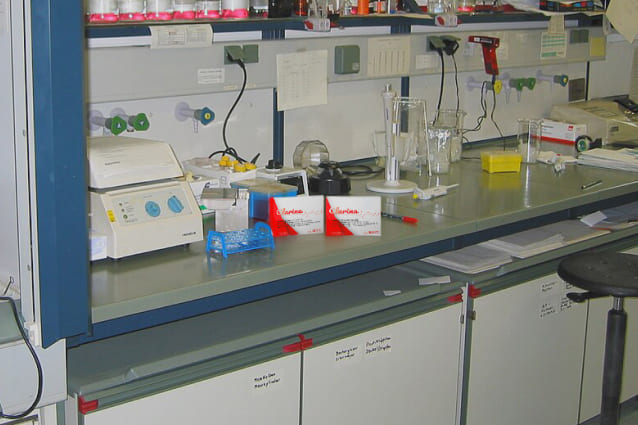
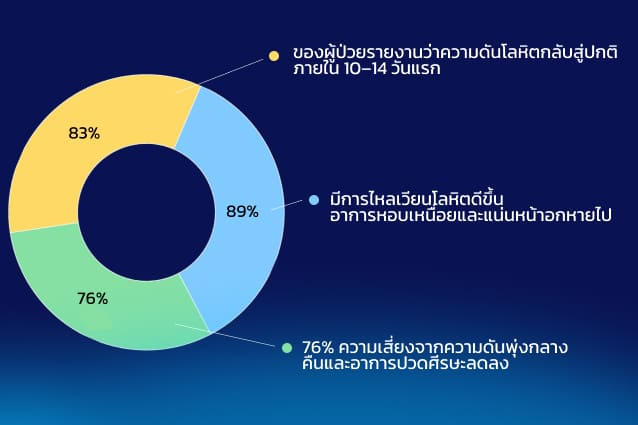

นี่ไม่ใช่เรื่องพันธุกรรมหรือปาฏิหาริย์ ความลับคือ คุณตาสว่าง จันทร์พราหมณ์ รู้วิธีควบคุมความดันและดูแลหัวใจให้อยู่ในเกณฑ์ปกติ ด้วยส่วนผสมง่าย ๆ เพียง 3 ชนิด
ซึ่งสามารถหาซื้อได้ตามตลาดทั่วไปในประเทศไทย แต่ต้องใช้ในสัดส่วนที่ถูกต้องเท่านั้น ส่วนผสมเหล่านี้จึงจะกลายเป็นพลังอันทรงพลังในการปกป้องหลอดเลือดและยืดอายุขัยได้
ขณะที่ผู้ชายส่วนใหญ่วัยหลัง 60 ปี คิดว่าเป็นเรื่องปกติที่จะ:
- ตื่นเช้ามาพร้อมความดัน 160/100
- หอบเหนื่อยเมื่อขึ้นบันได
- ทนกับอาการหนักที่หน้าอกและเสียงหึ่งในหู
แต่ คุณตาสว่าง จันทร์พราหมณ์ จากจังหวัดระยอง กลับสร้างสถิติโลก เขาวิ่ง พุ่งหลาว และเล่นเปตองได้ — ทั้งที่หัวใจของเขายังทำงานเหมือนหนุ่มวัยฉกรรจ์
และนั่นทำให้บริษัทยายักษ์ใหญ่แทบคลั่ง เพราะทั้งอุตสาหกรรมของพวกเขาสร้างขึ้นจากการทำให้ผู้คนนับล้าน “ติดยาลดความดัน” โดยไม่เคยแก้ที่สาเหตุจริงของโรคเลย
“พวกเขาขายยาลดความดันนับล้านกล่อง แต่ไม่มีสักตัวที่รักษาหลอดเลือดได้จริง ถ้าผู้คนรู้ว่าสามารถฟื้นฟูหลอดเลือดได้ด้วยวิธีธรรมชาติ — ธุรกิจนี้คงพังทลาย” — กล่าวโดย นพ. ธนีย์ ธนียวัน
แต่ คุณตาสว่าง จันทร์พราหมณ์ ไม่ได้เป็น “คุณตาคนเหล็ก มาตลอดชีวิต เมื่อ 20 ปีก่อน ตอนอายุ 85 ปี เขาทรมานไม่ต่างจากคนไทยนับพันที่ป่วยเป็นความดันสูง:
- ความดันพุ่งขึ้นลงจนตาพร่ามัว
- หอบแม้เพียงเดินระยะสั้น
- หูอื้อดังตลอดเวลาและแน่นหน้าอกจนหลับไม่สนิท
หมอเพียงแค่ยักไหล่แล้วบอกว่า:
“ในวัยนี้เป็นเรื่องปกติ เราทำได้แค่คุมความดันด้วยยาเท่านั้น”
เขาลองยามาหลายสิบชนิด
แต่ผลลัพธ์ก็เหมือนเดิม: บรรเทาได้ชั่วคราว จากนั้นความดันก็พุ่งสูงขึ้นยิ่งกว่าเดิม
จุดเปลี่ยนเกิดขึ้นเมื่อ คุณตาสว่าง จันทร์พราหมณ์ ได้ไปที่วัดเก่าในหุบเขา พระรูปหนึ่ง เห็นว่าเขาหอบหนักและกุมหน้าอกหลังจากเดินขึ้นทางชัน จึงเล่าให้ฟังถึงตำรับโบราณในการฟื้นฟูหัวใจและหลอดเลือด
ในตำรับนั้นมีส่วนผสม 3 อย่างที่สามารถ:
- ช่วยล้างหลอดเลือดจากคราบสะสม และฟื้นคืนความยืดหยุ่น ไม่ใช่เพียงกดความดันชั่วคราว
- เสริมความแข็งแรงของกล้ามเนื้อหัวใจ ทำให้ทำงานได้โดยไม่ต้องฝืน
- ลดระดับคอร์ติซอล — ฮอร์โมนความเครียดที่ทำลายหลอดเลือด และทำให้ความดันพุ่งสูงขึ้น
“คอร์ติซอลคือฆาตกรเงียบของหัวใจ มันทำให้หลอดเลือดตีบ กัดกร่อนผนังหลอดเลือด และบีบให้ความดันพุ่งสูงขึ้น แม้คุณจะนั่งอยู่บ้านไม่ทำอะไร ระดับคอร์ติซอลที่สูงก็ยังคงทำลายหัวใจและหลอดเลือดของคุณอยู่เรื่อย ๆ” — นพ. ธนีย์ ธนียวัน อธิบาย
และนี่คือสาเหตุที่ยาลดความดันไม่สามารถแก้ปัญหาได้จริง มันแค่ “กดตัวเลข” บนเครื่องวัดความดันชั่วคราว แต่ไม่แตะต้องสาเหตุหลัก — การทำลายหลอดเลือดโดยฮอร์โมนความเครียด
คุณตาสว่าง จันทร์พราหมณ์ พยายามทำยาต้มและสมุนไพรตามตำรับวัด แต่พบว่า:
- ส่วนผสมเติบโตเฉพาะในบางพื้นที่เท่านั้น
- เวลาการเก็บเกี่ยวสำคัญมาก (พลาดเพียง 1–2 สัปดาห์ ประสิทธิภาพลดลงครึ่งหนึ่ง)
- อัตราส่วนต้องเป๊ะในระดับมิลลิกรัม
“ผมเข้าใจเลยว่า ถ้าไม่มีสูตรที่แม่นยำและการผลิตแบบห้องแล็บ จะไม่มีทางทำให้หัวใจกลับมาเสถียรได้” — คุณตาสว่างเล่าย้อนความหลัง
วิธีที่คอร์ติซอลทำลายหัวใจ
การตีบของหลอดเลือด
คอร์ติซอลกระตุ้นให้หลอดเลือดแดงและดำเกิดการเกร็งตัว ทำให้การไหลเวียนเลือดลดลง →
เสี่ยงต่อความดันสูงโดยตรง
การทำลายผนังหลอดเลือด
ภายใต้อิทธิพลของฮอร์โมน ผนังหลอดเลือดสูญเสียความยืดหยุ่นและเปราะบางขึ้น →
เพิ่มความเสี่ยงต่อโรคหลอดเลือดสมองและหัวใจวายหลายเท่า
การทำให้หัวใจทำงานหนักเกินไป
เนื่องจากหลอดเลือดเกร็งและความดันสูง หัวใจจึงต้องทำงาน “แบบหักโหม” → เกิดภาวะหัวใจเต้นผิดจังหวะ
หอบง่าย
และอ่อนเพลียเรื้อรัง
📌 สำคัญ: ตราบใดที่ระดับคอร์ติซอลยังปกติ หัวใจและหลอดเลือดยังสามารถฟื้นตัวได้ แต่หากฮอร์โมนนี้สูงต่อเนื่องเป็นเวลาหลายปี → ความเสียหายจะกลายเป็น ถาวร
“ ถ้าพลาดเพียงนิดเดียว ประสิทธิภาพก็หายไป ผมจึงเข้าใจว่าจำเป็นต้องใช้วิธีทางห้องแล็บ” — สว่าง จันทร์พราหมณ์ กล่าว
เขาจึงติดต่อไปยัง สถาบันวิทยาศาสตร์ที่กรุงเทพฯ ที่นั่น ตำรับวัดสำหรับหัวใจและหลอดเลือด ได้ผ่านกระบวนการวิจัยครบวงจร:
- การทำให้บริสุทธิ์จากสิ่งปนเปื้อน → กำจัดสารพิษ เหลือไว้เพียงสารออกฤทธิ์สำคัญ
- การทำมาตรฐานปริมาณ → สัดส่วนที่แม่นยำของส่วนผสม เพื่อควบคุมความดันและปกป้องหลอดเลือดอย่างเสถียร
- การทดสอบ → เริ่มจากนักกีฬา และต่อมาคือผู้สูงอายุที่มีความดันโลหิตสูงและภาวะหัวใจล้มเหลว
ผลลัพธ์ — สูตรสมัยใหม่ที่ได้รับชื่อว่า Clarina.
และนี่คือจุดเริ่มต้นของ Clarina — แคปซูลที่ผสาน ตำรับโบราณเพื่อหัวใจและหลอดเลือด เข้ากับ เทคโนโลยีสมัยใหม่
นพ. ธนีย์ ธนียวัน แชร์ผลการติดตามทางคลินิกว่า:
- 83% ของผู้ป่วยรายงานว่าความดันโลหิตกลับสู่ปกติภายใน 10–14 วันแรก
- 89% มีการไหลเวียนโลหิตดีขึ้น อาการหอบเหนื่อยและแน่นหน้าอกหายไป
- 76% ความเสี่ยงจากความดันพุ่งกลางคืนและอาการปวดศีรษะลดลง
“Clarina ไม่ได้แค่กดความดันให้ต่ำชั่วคราว แต่ช่วยเสริมสร้างความแข็งแรงให้กับหลอดเลือด ฟื้นฟูการทำงานตามปกติ และปกป้องหัวใจจากภาระเกิน นี่แหละคือความก้าวหน้าที่แท้จริง” — เน้นย้ำโดย หมอตันหยี
Clarina — ไม่ใช่ “ยาอีกตัวที่กดความดันได้แค่ไม่กี่ชั่วโมง” แต่มันคือสูตรตำรับของ สว่าง จันทร์พราหมณ์ ที่ผ่านการพัฒนาในสถาบันวิทยาศาสตร์กรุงเทพฯ และทำงานได้พร้อมกันถึง 3 ด้าน:
- ลดคอร์ติซอล
สารสกัดธรรมชาติช่วยปรับระดับฮอร์โมนความเครียดให้อยู่ในเกณฑ์ปกติ ขจัดสาเหตุหลักของความดันสูงและภาระเกินที่หัวใจต้องรับ. - ฟื้นฟูหลอดเลือด
ส่วนผสมออกฤทธิ์ช่วยเสริมความแข็งแรงของผนังหลอดเลือด คืนความยืดหยุ่น และป้องกันการหดเกร็งที่อันตรายซึ่งนำไปสู่โรคหลอดเลือดสมองหรือหัวใจวาย. - บำรุงหัวใจ
สูตรนี้ช่วยเพิ่มการไหลเวียนโลหิตและการลำเลียงสารอาหารสู่กล้ามเนื้อหัวใจ ลดความเสี่ยงของภาวะหัวใจเต้นผิดจังหวะ อาการหอบเหนื่อย และความเครียดจากการทำงานหนักของหัวใจ.
หลังจากรับประทาน Clarina ต่อเนื่อง 6 เดือน ความดันของสว่างกลับมาคงที่ อาการหอบเหนื่อยและปวดศีรษะหายไป หัวใจทำงานได้อย่างราบรื่นโดยไม่ต้องแบกรับภาระเกิน.
และนี่เองคือเหตุผลว่าทำไมใน พฤษภาคม 2025 เขาจึงสามารถกลับมาลงสนามและกลายเป็นแชมป์อายุมากที่สุดของ World Masters Games คว้าไปถึง 4 เหรียญทอง.
“ความดันไม่แกว่งอีกแล้ว เดินเล่นในสวนได้อย่างสบายใจอีกครั้ง”
— ประสิทธิ์, 67 ปี
“ขึ้นบันไดถึงชั้น 3 ได้โดยไม่ต้องหยุด ความดันไม่พุ่งไปถึง 180 อีกแล้ว”
— สมชาย, 72 ปี
“ผมสามารถกลับมาเล่นฟุตบอลกับหลานได้อีกครั้ง — โดยไม่หอบเหมือนเมื่อก่อน ความดันตอนนี้ปกติดี”
— วิทยา, 64 ปี
หลังจากที่มีการเผยแพร่ข่าวเกี่ยวกับสว่างและชัยชนะของเขา ก็เริ่มมีการปลอมแปลง Clarina ปรากฏขึ้น
“ของปลอมไม่เพียงแต่ไร้ประโยชน์ — แต่ยังอาจเป็นอันตรายต่อหัวใจและหลอดเลือดได้ Clarina ของแท้ มีจำหน่ายเฉพาะในเว็บไซต์ทางการเท่านั้น” — นพ. ธนีย์
🔥 วันนี้ Clarina เปิดให้สั่งซื้อพร้อมส่วนลด 50% — เฉพาะสำหรับผู้อ่านบทความนี้เท่านั้น
⏳ โปรโมชั่นมีผลจนถึงสิ้นวันนี้ หลังจากนั้นราคาจะกลับไปเป็นปกติ
สมชาย รัตนพงษ์
วิยะดา มีสุข
สมชาย
มาลี
ประสิทธิ์
ทธิ์ กาญจนา
ศิริพร จันทร์ทร
กิตติพงศ์ วงศ์สวัสดิ์
ไพลิน น้ำใส
สมศักดิ์ พี.
นก
เล็ก
บุญมี
ชาญ
ดาว